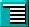
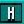
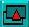
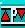

The [WB] button will have no effect if the CLOSE WORKBENCH command has been called from one of your programs, as explained in Chapter 13.1.
Between the [DIR] and [WB] buttons, there is a line of icons that provide rapid access to various features, directly from the screen. From left to right, they have the following uses:
As usual, all of these icons are activated by the left mouse button. This is the [RUN] button, and it is used to run the current program listing. If any errors are encountered in the program, a message will be displayed in the Information Line.
The [TEST] button instructs AMOS Professional to test the current program for errors, without running the program. A full list of error messages is listed in Chapter 12.3, and the Help facility is available to explain the correct use and syntax of instructions.
 [INDENT]. Use this button to automatically indent your program listings. Where example programs are printed in this User Guide, they are displayed in indented format.
This icon is used to summon up the AMOS Professional [MONITOR], which provides detailed help and analysis of your programs. A full explanation of the Monitor can be found in Chapter 12.1.
 [HELP]. The next Chapter provides a detailed examination of the AMOS Professional help facilities. Use this button to call up the Help main menu.
 [UNDER] and [ABOVE]. This pair of buttons is used to display the window which is under or above the current window, in other words it moves to the previous or next window.
The [INSERT/OVERWRITE] button toggles between the two modes of editing, which are explained in the paragraphs concerning the Information Line, below.
 The [PROCEDURES] icon is used to open or close a procedure. Unlike the image of the last button, which is a toggle, this icon is an animation, and after being activated it returns to its original state.
This icon represents [INSERT A RETURN], and its use is dealt with in the explanations of the menu options.
The two indicator bars to the right of the above icon buttons display the amount of Chip and Fast memory that is currently being used.